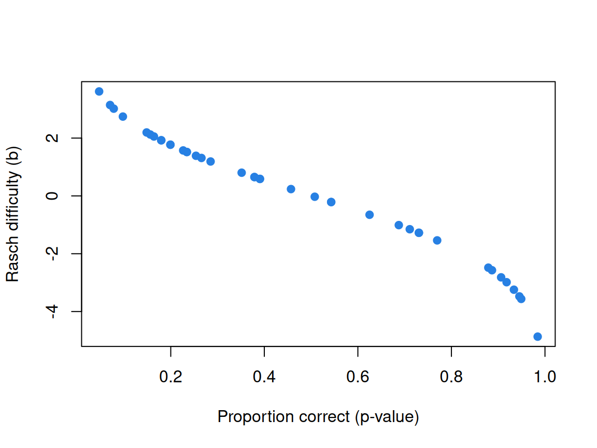
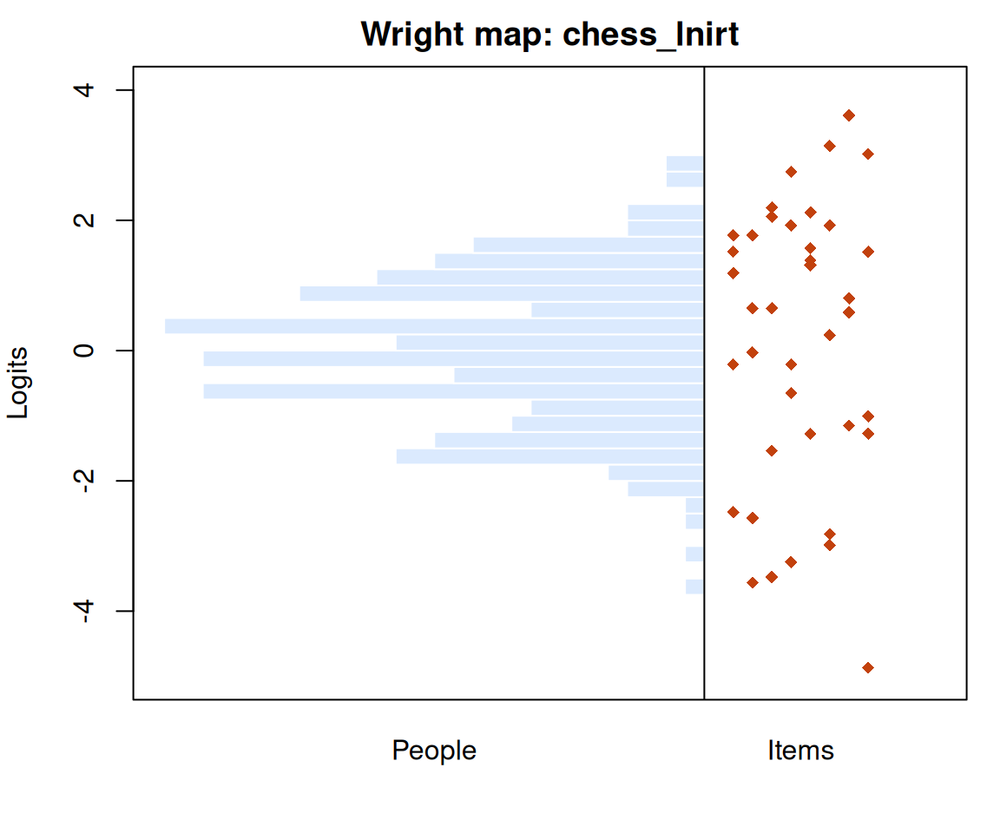
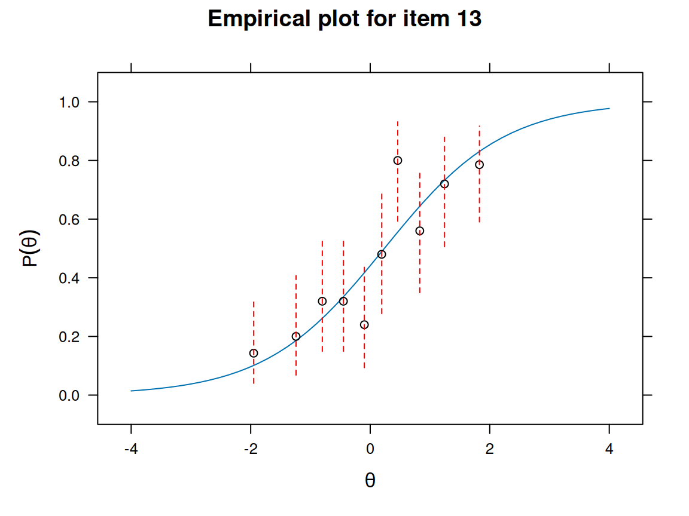
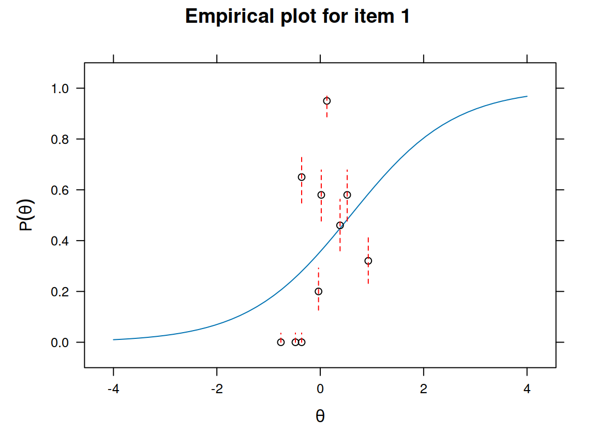

The Rasch model
What this is for
Sum scores treat every item as interchangeable: a correct answer is worth one point no matter which item it came from. In the last lesson we saw that this is a strange assumption—some items are far harder than others, and the relationship between the sum score and any one item is not a straight line. The Rasch model is the simplest model that takes items seriously. It puts people and items on the same scale, and it does so with a single parameter per person and a single parameter per item. That parsimony buys some unusual properties, and it also makes demands of the data. This lesson is about both.
Goals
By the end of this lesson you should be able to:
- write down the Rasch model and say what \(\theta\) and \(b\) mean;
- read an item characteristic curve and a Wright map;
- explain why the scale has no natural origin (and what software does about it);
- explain why the sum score is all the Rasch model needs to know about a person, and what “specific objectivity” asks of the data;
- fit the model to real item response data with
mirtand check whether it fits.
Core ideas
From logistic regression to the Rasch model
Recall logistic regression: for a binary outcome \(y\) and a predictor \(x\), \[\Pr(y = 1) = \frac{\exp(b_0 + b_1 x)}{1 + \exp(b_0 + b_1 x)}.\] There we observe \(x\) and estimate \(b_0\) and \(b_1\). The Rasch model has the same shape, but everything on the right-hand side is unknown. For person \(j\) and item \(i\), \[\Pr(x_{ij} = 1) = \frac{\exp(\theta_j - b_i)}{1 + \exp(\theta_j - b_i)}.\]
- \(\theta_j\) is the person’s ability—an idealized version of the sum score. It, and it alone, determines how a person performs on the items.
- \(b_i\) is the item’s difficulty. When \(\theta = b\), the odds of a correct response are even.
Plotting the probability of a correct response against \(\theta\) for a single item gives the item characteristic curve (ICC). Move the difficulty around and watch what happens.
Try it: an item characteristic curve
Note a few things. Changing \(b\) slides the curve left and right without changing its shape; a harder item simply needs more ability for the same chance of success. The curve never reaches 0 or 1, so nobody is certain to get any item right or wrong. And the slope slider is a preview: the Rasch model fixes it at 1 for every item, and relaxing that assumption gives the 2PL, which we take up in From the 1PL to the 4PL. (A challenge, especially if you know probit regression: turn on the normal CDF and find the slope that makes the two curves nearly identical. The answer is roughly 1.7: the scaling constant \(D\) that older IRT papers carry around so that logistic and normal-ogive parameters can be compared.)
The scale has no origin
Where is zero on this scale? Nowhere in particular. Suppose we add the same constant \(C\) to every person’s ability and every item’s difficulty. The model only ever sees \(\theta - b\), so nothing about the predicted responses changes.
Try it: shift everything
The probabilities in the last column do not move. The data can tell us how far apart people and items are, but not where zero is; we say the model is not identified without an extra constraint. Software picks one for you. mirt, for example, fixes the mean ability at 0; other programs fix the mean item difficulty at 0 instead. The choice is arbitrary, and results from two programs can differ by exactly such a shift—something to remember before you compare numbers across studies.
People and items on one scale: the Wright map
Because \(\theta\) and \(b\) live on the same scale, we can plot them together. A Wright map puts the distribution of people on one side and the item difficulties on the other. It answers a practical question at a glance: is this test well matched to the people who took it?
Try it: build a Wright map
Where people and items overlap, the test can tell people apart; where people sit far above or below every item, it cannot. That idea—precision depends on where you are on the scale—is the subject of Information, precision, and short forms.
What the model assumes
Two assumptions deserve emphasis. First, the formula is right: in particular, a single \(\theta\) drives every response (the model is unidimensional). Second, responses are locally independent: once we know \(\theta\), knowing how someone answered item 3 tells us nothing more about item 4. Both can fail, and it is worth brainstorming how before we meet the formal checks. Two items that share a reading passage? A test where the last ten items measure something else? The IRW has vignettes on how often each assumption holds across hundreds of datasets: dimensionality and local dependence.
The sum score is sufficient
The Rasch model has a property that sets it apart from nearly every other item response model: the sum score is a sufficient statistic for \(\theta\). Once you know how many items someone got right, nothing else in their responses—not which items—changes what we can learn about their ability. (For an analogy: once you know the mean of a sample from a normal distribution, the individual draws tell you nothing more about the population mean.)
This is easier to see than to state. Below are five items of increasing difficulty. Pick a response pattern and look at the likelihood for \(\theta\); then look at every other pattern with the same sum score.
Try it: sufficiency
Under the Rasch model the column is constant: every pattern with the same sum score gets the same estimate. Switch to the 2PL and it no longer is—getting a highly discriminating item right now counts for more. Note too that the relationship between sum scores and Rasch abilities is one-to-one but not linear; the step from 4 to 5 correct is a big one.
Specific objectivity
The Rasch tradition has a name for the property it prizes: specific objectivity. Comparisons between people should not depend on which items we happened to use, and comparisons between items should not depend on which people happened to take them. It is a demand we place on the data, not something the data grants us for free.
It is easiest to see through ICCs. If two items’ curves never cross, then everyone finds item A easier than item B, whatever their ability. If they cross, the ordering of the items depends on who you ask—and the statement “item A is easier than item B” stops meaning anything on its own.
Try it: do the curves cross?
This is why partisans of the Rasch model feel so strongly about it: specific objectivity and sufficiency are what classical measurement in the physical sciences looks like. The catch is that the model has to fit. Consistency with the Rasch model comes from hard work—iterative item development and pruning of items that don’t behave—not from applying it to whatever data you have. Whether equal slopes are plausible for typical test data is an empirical question, and the 2PL discrimination vignette looks at it across many IRW datasets.
A note on estimation
Fitting the model is a harder problem than it looks, because nothing on the right-hand side is known. If we knew the item difficulties, estimating abilities would be straightforward (and vice versa). The conventional approach estimates the item parameters first, integrating over the distribution of abilities with the EM algorithm, and then estimates abilities treating those item parameters as known. We take these steps in turn in Estimating abilities and Estimating item parameters. For now, mirt will do it for us.
Simulate
The best way to understand what a model can recover is to generate data from it yourself. The code below simulates responses from the Rasch model, fits the model with mirt, and compares the estimated difficulties to the truth. It runs here in your browser; the first run takes about 20 seconds while R and mirt load.
Try changing np to 50, then to 2000. How does the scatter around the line change? What about changing ni?
One detail merits emphasis, because it trips up almost everyone: mirt writes the Rasch model as \(\Pr(x = 1) = 1/(1 + \exp(-(\theta + d)))\), so its parameter d is an easiness. Our difficulty is \(b = -d\), which is why the code negates it.
Download this code to run it in your own R session, where you can make the simulation as large as you like.
With real data
We will fit the Rasch model to chess_lnirt: 40 chess problems answered by 259 players of varying skill (from van der Maas and Wagenmakers’s Amsterdam Chess Test). The data come straight from the IRW, with no account needed. The code below is what produced every number and figure in this section; download it to run it yourself.
Code
library(mirt)
# Each IRW table has a landing page (itemresponsewarehouse.org/tables/<name>/)
# with a CSV download. This link is pinned to one version of the data.
chess_url <- "https://redivis.com/api/v1/tables/datapages.item_response_warehouse:v57_0.chess_lnirt/rows?format=csv"
df <- read.csv(chess_url)
head(df)| resp | rt | item | cov_elo | id |
|---|---|---|---|---|
| NA | 10000 | Y39 | -0.72 | 147 |
| NA | 10000 | Y20 | -0.72 | 147 |
| NA | 10000 | Y28 | -0.72 | 147 |
| NA | 10000 | Y9 | -0.72 | 147 |
| NA | 10000 | Y16 | -0.72 | 147 |
| NA | 10000 | Y10 | -0.72 | 147 |
IRW tables are long—one row per response—so we reshape to one row per person. Note the first rows above: that player has no responses at all, and we drop players like them.
Code
# IRW tables are long: one row per person-item response. mirt wants wide: one
# row per person, one column per item.
long2wide <- function(df) {
wide <- tapply(df$resp, list(df$id, df$item), function(x) x[1])
as.data.frame(wide[, order(as.numeric(gsub("\\D", "", colnames(wide))))])
}
resp <- long2wide(df)
# A few players have no responses at all (resp is NA for every item; the first
# rows of the table are one of them). They carry no information, so drop them.
resp <- resp[rowSums(!is.na(resp)) > 0, ]
dim(resp)[1] 256 40Code
m1 <- mirt(resp, 1, itemtype = "Rasch", verbose = FALSE)
# mirt writes the Rasch model as P(x = 1) = 1 / (1 + exp(-(theta + d))), so its
# "d" is an easiness. The difficulty in our notation is b = -d.
b <- -coef(m1, simplify = TRUE)$items[, "d"]
round(head(sort(b)), 2) # the easiest items Y31 Y1 Y2 Y3 Y21 Y5
-4.9 -3.6 -3.5 -3.2 -3.0 -2.8 Code
round(tail(sort(b)), 2) # the hardest itemsY36 Y18 Y19 Y15 Y29 Y30
2.1 2.2 2.7 3.0 3.1 3.6 The easiest problem (Y31) sits nearly five logits below the average; the hardest (Y30) more than three and a half above. That is a wide spread of difficulty, which is what you want from a test meant to separate novices from masters.
How do these difficulties relate to the simplest measure of item difficulty, the proportion of people who get the item right?
Code
p <- colMeans(resp, na.rm = TRUE)
plot(p, b, xlab = "Proportion correct (p-value)", ylab = "Rasch difficulty (b)",
pch = 19, col = "#2780e3")
The relationship is tight and monotone but not linear: the Rasch scale stretches out the extremes, where a few percentage points of correct responses correspond to a large difference in difficulty.
Code
theta <- fscores(m1)[, 1]
br <- seq(floor(min(c(theta, b))), ceiling(max(c(theta, b))), by = 0.25)
h <- hist(theta, breaks = br, plot = FALSE)
op <- par(mar = c(4, 4, 2, 1))
plot(NULL, xlim = c(-max(h$counts), 12), ylim = range(br), xaxt = "n",
xlab = "", ylab = "Logits", main = "Wright map: chess_lnirt")
rect(-h$counts, h$breaks[-length(h$breaks)], 0, h$breaks[-1], col = "#dbeafe", border = "white")
points(rep(1.5, length(b)) + (seq_along(b) %% 8), b, pch = 18, col = "#c2410c")
abline(v = 0)
axis(1, at = c(-max(h$counts) / 2, 5), labels = c("People", "Items"), tick = FALSE)
Code
par(op)
c(mean_theta = mean(theta), mean_b = mean(b))mean_theta mean_b
-0.0002 0.1232 Because mirt fixes the mean ability at 0, the mean difficulty tells us how hard the test is for this sample: here the two are within about a tenth of a logit, so the test is well targeted, and the items span the people nicely.
Does the model fit? A common first look is the infit and outfit statistics: mean squared standardized residuals, which should be near 1 if the model is right. Values well below 1 mean an item is more predictable than the Rasch model expects (typically an item that discriminates better than average); values well above 1 mean it is noisier.
Code
fit <- itemfit(m1, fit_stats = "infit")
head(fit[order(-abs(fit$z.outfit)), ], 5) # the five worst-fitting items| item | outfit | z.outfit | infit | z.infit | |
|---|---|---|---|---|---|
| 9 | Y9 | 0.64 | -5.0 | 0.70 | -5.77 |
| 8 | Y8 | 0.73 | -3.5 | 0.78 | -4.15 |
| 38 | Y38 | 0.73 | -3.0 | 0.81 | -3.30 |
| 10 | Y10 | 0.73 | -2.9 | 0.84 | -2.83 |
| 15 | Y15 | 2.22 | 2.6 | 1.18 | 0.98 |
Code
itemfit(m1, empirical.plot = 13)
Most of the worst-fitting items here overfit (outfit below 1): they separate strong and weak players more sharply than a common slope allows. Item Y15 is the exception, with an outfit above 2. The empirical plot compares the model’s ICC for one item with the observed proportions correct among players grouped by ability. Try other items in your own session.
For contrast, here is a very different dataset: wirs, six items from the Workplace Industrial Relations Survey, analysed by Bartholomew (1998).
Code
wirs_url <- "https://redivis.com/api/v1/tables/datapages.item_response_warehouse:v57_0.wirs/rows?format=csv"
resp_w <- long2wide(read.csv(wirs_url))
m2 <- mirt(resp_w, 1, itemtype = "Rasch", verbose = FALSE)
itemfit(m2, empirical.plot = 1)
The contrast with chess is stark. The chess item’s observed proportions track the model’s curve; the wirs item’s do not, jumping from 0 to 0.95 and back to about 0.3 within two logits. (With only six items, the ability estimates also bunch into a narrow range.) Whether the Rasch model is a reasonable description of a dataset is something to check item by item, not assume; the formal version of this check is in Model fit and out-of-sample prediction.
Problems
- The logit. Show that \(\frac{e^x}{1+e^x} = \frac{1}{1+e^{-x}}\). Then show that under the Rasch model, \(\log\frac{\Pr(x=1)}{\Pr(x=0)} = \theta - b\). What does a one-unit increase in \(\theta\) do to the odds of a correct response, on any item?
- Indeterminacy. Suppose \(\theta' = \theta + C\) and \(b' = b + C\). Show that \(\Pr(x = 1)\) is unchanged. Now suppose instead \(\theta' = k\theta\) and \(b' = kb\) for some \(k \ne 1\). Is the Rasch model still unchanged? What does your answer say about which feature of the scale the Rasch model does pin down?
- Reading mirt. Fit the Rasch model to
chess_lnirtand plot the item proportions correct againstmirt’s rawdparameters (without negating them). Explain the direction of the relationship, using themirtdocumentation foritemtype = "Rasch". - Targeting. Draw the Wright map for
chess_lnirt. For which players does this test give the least information, and why? Suggest the difficulty of two items you would add to the test to improve measurement for them. - Fit, two ways. Using
itemfit(..., empirical.plot = i), compare the fit of several items inchess_lnirtand inwirs. Which dataset does the Rasch model describe better? Now simulate data from the Rasch model (the simulation above, withnp = 2000andni = 50) and look at the same plots. What does “good fit” look like when you know the model is true? - Challenge: sufficiency in the data. In
chess_lnirt, find two players with the same sum score but very different response patterns. Compare their estimated abilities (fscores). Then fit a 2PL (itemtype = "2PL") and compare again. Explain what you see.
Going further
- Tutz, G. (2025). A short guide to item response theory models. Springer. Chapter 2 derives the Rasch model, including from sufficiency (section 2.4.2).
- Wright, B. D. (1997). A history of social science measurement. Educational Measurement: Issues and Practice, 16(4), 33–45. The case for the Rasch model, made with feeling.
- van der Maas, H. L. J., & Wagenmakers, E.-J. (2005). A psychometric analysis of chess expertise. American Journal of Psychology, 118(1), 29–60. The source of the chess data.
- Bartholomew, D. J. (1998). Scaling unobservable constructs in social science. Journal of the Royal Statistical Society: Series C, 47(1), 1–13. The source of the
wirsdata. - From the IRW: simulating item difficulties shows what real difficulty distributions look like across hundreds of datasets, which is worth knowing before you choose one for a simulation.
Data sources
Data from the Item Response Warehouse (each table name links to its IRW page); references from IRW biblio.
chess_lnirt: Van Der Maas, H. L., & Wagenmakers, E. J. (2005). A psychometric analysis of chess expertise. The American journal of psychology, 118(1), 29-60. https://doi.org/10.2307/30039042. Licence: GPL-3.0.wirs: Bartholomew, D. (1998) Scaling unobservable constructs in social science. Applied Statistics, 47, 1–13. https://doi.org/10.1111/1467-9876.00094. Licence: GPL-3.0.
For instructors
- Source: EDUC 252 class 3 (slides c3, “Probabilistic item response modeling” through “Estimation of the RM”) and the code in
ben-domingue/252:c3/rasch0.R,c3/rasch1.R,c3/rasch2.R. - Timing: the core ideas and widgets fit in about 75 minutes of class; the real-data section works well as an in-class lab.
- Held back: item and test information, and the estimation algorithms, have their own lessons. The problem set questions on Rasch fit statistics (outfit’s sampling distribution) are in Model fit and out-of-sample prediction.
- Solutions: not yet written.